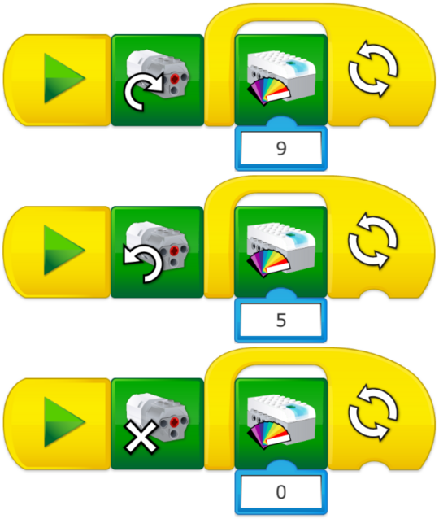
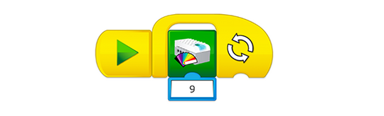
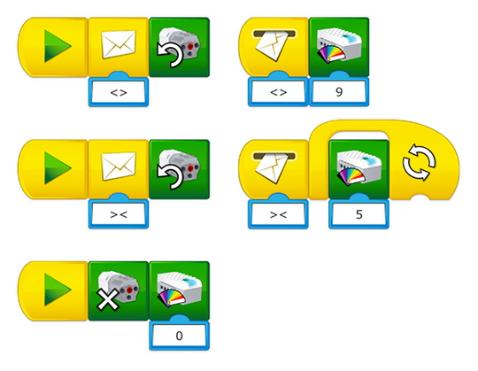

Enable Your Pupils to Evaluate and Modify a Solution (Evaluation)
Use this task to evaluate whether or not your students have applied what they have learned in the previous task.
The answer to this problem is:

The parameter to be changed is the direction of one of the motors in one of the programming strings.
Programming Help
Keep the Light On
Using just the turn on Light Block will only light up the LED for a short moment. To keep the LED turned on, the students will need to use a loop.

Differentiation Opportunities
Add a variation or extend this project by giving your students one of the following programs to troubleshoot with the assumption that the hand should work in the same way:
-
New program to correct

-
Have the students create statements about how a program should work and provide a non-working program with it.
During the Test phase, make sure that the student works well in a team, justifies their best solution and uses the information that they collected during the Explore phase.
Feedback can be given on a scale of 1 to 4:
-
The student is unable to work well in a team, justify solutions and use information collected for further development.
-
The student is able to work in a team, collect and use information with guidance, or with help, to justify solutions.
-
The student is able to work in a team and contribute to the team discussions, justify solutions, and collect and use information about the content.
-
The student can justify and discuss solutions that allow for the collection and use of information.
Specific rubrics for assessing computational thinking skills can be found in the curriculum document.